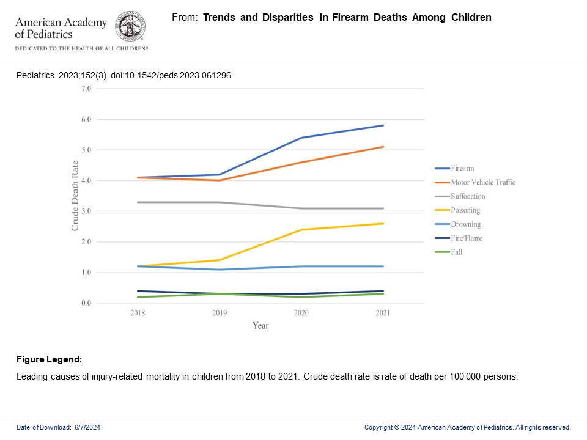
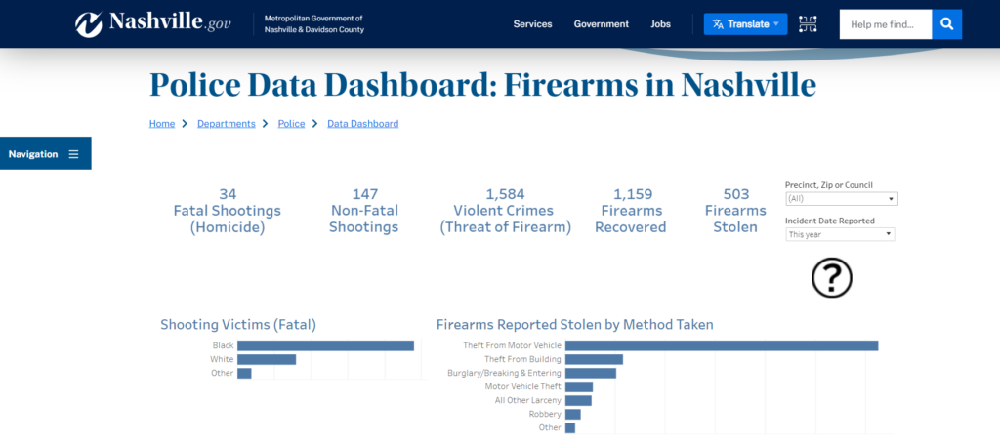
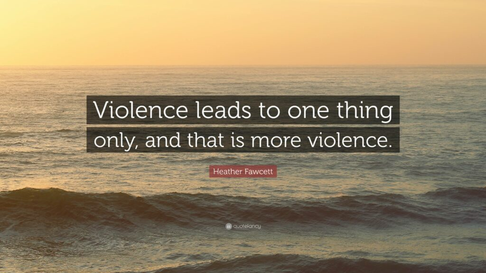
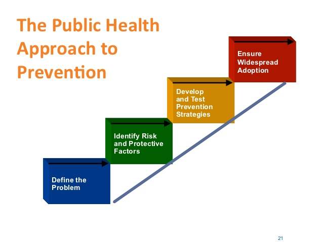
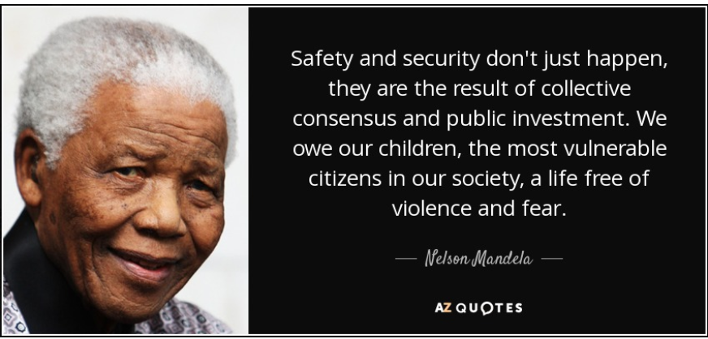
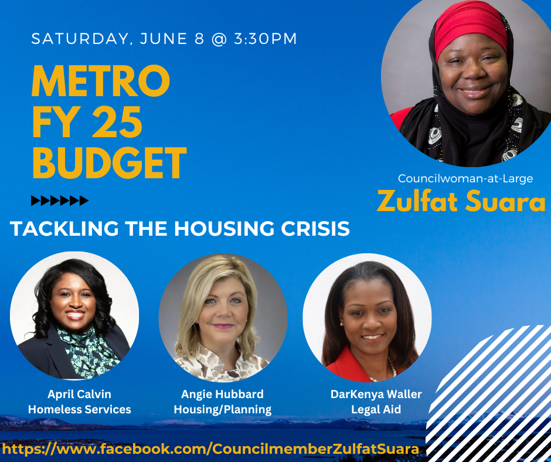

Youth Safety and Community Programs: A Collaborative Approach
Thank you for joining us for another crucial discussion on our city’s budget and our community safety. Last week, we had a deep dive into our education budget, and today, we’re focusing on an equally important: youth safety and community programs. Every day as a councilperson, I receive emails from the police department about crimes in our city, many involving our youth. On May 29, Aaden Haynes, a 13 year old and his sister were shot by another 15 year Old. On the same day another teen was shot at an apartment party on May 29 on Elliston place. A day later, a 19 year old was arrested for the murder of her mother’s boyfriend. While homicide in Nashville have dropped significantly (25%) from last year, unfortunately youth gun violence continues to be of great concern to our local communities.
According to the American Academy of Pediatrics, firearms continues to be the leading cause of death in children and youth..

This recurring issue raises the question: what can we do to ensure the safety of our children? Police Chief John Drake in his FY25 budget hearing shared his department vision to enhance safety for Nashvillians. You can watch the MNPD budget hearing here. The chief in his presentation shared his department community programs. These programs are aimed at enhancing cooperation between the police and the community they serve. According to the MNPD data dashboard, the departments have conducted or participated in 364 community engagements in 2024. I commend Chief Drake and his team for the community initiatives. However when it comes to safety it is not a “yes, but…” answer. It’s a “yes AND…
We must do all we can.
Today’s conversation features insights from non police community leaders and advocates dedicated to this cause. I want to discuss the ongoing issue of youth violence and the community programs that aim to address it. This issue is crucial because our children’s safety directly impacts the future of our city.

My panelist
I’m excited to share insights from our esteemed guests, who have devoted their lives to creating safe environments for our youth.
Mr. Mike Lacy
Mr. Lacy describes himself as a “recovering metro employee,” formerly from the Mayor’s Office of Community Safety, where he worked under Ron Johnson, who’s also on the call. They worked for Mayor John Cooper and briefly under Mayor O’Connell. Currently, you can find him writing about different metro topics on Substack and consulting.
Mr. Mike Floss & Mr. Jamel Campbell-Gooch
Mr. Floss and Mr. Gooch are with the Southern Movement Committee (SMC). Mr. Floss is the Arts and Culture Director, while Mr. Gooch serves as the Organizing Director. The Southern Movement Committee is a nonprofit that brings Black folks in the city together to discuss their issues, come up with solutions, and develop action steps. SMC also has a youth assembly that is an internship program for young adults, where they learn about community organizing and build campaigns to help shift their reality in the city.
Mr. Travis Claybrooks
Mr. Travis Claybrooks is a former police officer and the founder/CEO of Raphah Institute. Raphah is a multidisciplinary laboratory that partners with communities to design solutions that help people access the resources they need to heal and thrive. The organization works at the intersection of the criminal legal system, namely the courts, with a restorative justice diversion process on felony cases.
Ms. Rasheeda Fetuga
Ms. Fetuga is the founder of Gideon’s Army, a grassroots army for children. The organization’s mission is to eliminate the root causes of the prison pipeline, save our children from death and incarceration, and guide them on a secure path to success. Gideon’s Army is a strategic peace-building organization working towards the elimination of violence and building peace within communities. They laid the foundation for the restorative justice program in juvenile courts and have been the catalyst behind violence interruption in Nashville.
Mr. Ron Johnson
Mr. Ron Johnson is the former Director of Community Safety under Mayor Cooper and briefly under Mayor O’Connell. Mr. Johnson is the founder of Street Solid, the only federal reentry program for men coming home from federal prison. He also co-founded “The Village,” an initiative of the Nashville Mayor’s Office that empowers leaders from marginalized communities by providing a safe space to thrive, connect, and access vital resources.

Factors Contributing to Youth Violence
Lack of safe spaces:
According to a survey by SMC, youth lamented that there are very few places where they can gather, have fun, and be themselves. The existence of safe spaces is crucial in reducing violence.. A lack of safe space can also lead to people feeling isolated geographically. This can also lead to feeling isolated in terms of psychological safety or the ability to get resources.
Punitive punishment systems
Punitive System is another contributing factor to violence. Punitive punishment that does not allow for second chances (especially for minor offences) and does not allow young people to learn from their mistakes.
Insufficient investment in proactive conflict resolution programs.
Jamel Campbell-Gooch from the Southern Movement Committee highlighted the importance of creating environments where young people can gather safely and learn to navigate conflicts constructively. Life will happen and so will conflict. Unfortunately, many youth have not had the opportunity to learn how to deal with conflict, so it does not escalate
Poverty:
It doesn’t matter whether you’re a young person, a baby, a child, a person who is of senior age,
the inability to meet economic needs can drive individuals to violence as they seek basic resources.
Shame:
The shame from being poor has been identified as another driver for violence. The shame from being poor can lead to violence, as individuals may react violently to discrimination and ridicule.
Lack of Political Champions:
Rasheeda Fetuga of Gideon’s Army pointed out that not enough funding is put behind violence interruption and other violence prevention programs. Even when there is funding, the process for accessing it is slow. Last Thursday, the Nashville Banner reported that violence prevention in Nashville is in limbo 8 Months after receiving the Federal Grant. Nashville need leaders to understand the urgency of the issue and not sit on funding that can potentially save lives.
Violence:
Travis Claybrooks emphasized that violence itself is a driver of further violence, and addressing economic needs, shame, and isolation is critical. AS the saying goes “Hurt people, hurt people”
| Despite all of these factors going into youth violence, there is one that is often most talked about but the least action has happened with: gun control laws. In the US, the leading cause of death of children and youth are guns, whether it’s youth violence, school shootings, or unsafe storage of firearms. Multiple notable mass shootings have occurred like Covenant, Uvalde, sandy hook but the legislation has not budged towards rectifying the law. Unfortunately, Tennessee only moves closer to allow open carry and arm teachers. which will not solve the problem. Effective measures such as safe storage, proper licensing, and purchasing means, and better firearm control are essential. |
How do we reduce youth violence?
Addressing Root Causes of Violence
Addressing root causes such as poverty, lack of education, and inadequate mental health support is crucial. Rashida Futuga from Gideon’s Army emphasized the importance of comprehensive violence interruption and trauma care programs.
Investment in Community Programs
Community programs need sustainable funding to thrive. For instance, Travis Claybrooks mentioned that the Raphah Institute’s restorative justice program requires significant funding to handle cases effectively. The Southern Movement Committee’s varsity spending plan also highlights the need for substantial investment in community centers and youth safety offices. While the state holds all the cards on gun laws, the city can invest in preventive measures (better housing, education and overall quality of life) as well as investment in programs to keep youth engaged.
Effective Use of Resources
Efficient allocation of resources is necessary to maximize impact. Learning from other municipalities that have successfully implemented community safety initiatives can be beneficial. For example, the Community Justice Action Fund, has a violence prevention index, which rates cities on how much they are investing in things that make communities safer. Unfortunately, though Nashville scored a 31%, the city can learn from such metric about what is not being done.
Recognize Gun/Youth Violence as a Public Health Crisis
The American Medical Association (AMA) in 2016 adopted a policy calling gun violence in the United States a “public health crisis” requiring a comprehensive public health response.

Share one of your organizations Community Safety programs
Raphah Institute
There is a case that is highlighted in the documentary Justice USA that’s streaming on Max right. Raphah is in episode 6. The case is about the family of a 78 year old man who was killed in a vehicle of homicide and a 13 year old boy who was responsible. The parties, after much preparation and much coaching and trauma, coaching and accountability, coaching, eventually came together. They had conversation around the harm, the impact of that harm, and they explored ways of repairing it.
Raphah Institute is requesting $632,000 to expand its work
SMC
Since 2022, SMC have been working with young people, mostly high school age, around 40 different high school students currently in the internship program. The youth were trained in organizing and advocacy and building democracy. They used those skills to host workshops and hosted a redefining public safety town hall, where they talked about what keeps them safe. The idea for SMC Varsity Plan came from these sessions.
SMC is requesting $10M to cover restorative justice, community center programs and the creation of the Office of Youth Safety. The Office of Youth Safety will be a central location, to track, coordinate and assist with execution of the many efforts and programs addressing youth violence.
Gideon’s Army
In addition to our violence interruption program, Gideon’s Army has a public health pre- certification that is focused specifically on training people around violence as a public health issue. It is an apprenticeship program through their Get University program. The program is an outreach, where case management work with young people who are mostly at high risk for participating in acts of violence or who are directly violent impacted.
Gideon’s Army’s Wishlist is $3.5M fund current programs as well as to build out the public health training, the public health apprenticeship program.
Street Solid
Street Solid offers a 16 week re-entry program centered on Cognitive Behavioral Therapy. The program has 100% non recidivism in the five year period. And that is with serving about, 70 to 80 men.
Street Solid is funded by the Federal government with an aspirational budget of $1M

Q & A
What is the economic impact of youth violence?
Youth violence has significant economic impacts, including loss of potential income and increased costs related to the criminal justice system. Investing in preventive measures can save the city millions in the long run.
What is the difference between Community Safety vs. Public Safety
Mike Lacy pointed out the distinction between community safety and public safety. Community safety involves preventive measures and quality of life improvements facilitated by community members, while public safety typically involves reactive measures by uniformed officials. Effective violence prevention requires substantial investment in community-led initiatives. A notable difference is that Public Safety which is funded about 300 times more than community safety initiatives are typically after the fact.
What role can the police play in community safety?
Police officers can build healthy relationships with the community. However, they are often tasked with solving problems they are not equipped to handle. It’s like asking a railroad company to fly planes. Yes, they are both transportation, but the skills/expertise needed are different. And to ask them to fly planes is just the wrong business. Police can play a supportive role by partnering with community organizations and focusing on preventive measures.
Challenges and Opportunities in Collaborative Efforts
Ron Johnson, formerly from the Mayor’s Office of Community Safety, emphasized the importance of collaborative efforts between the police and community organizations. Building trust and understanding between these groups is essential. Police departments must be willing to work with individuals who have real influence within their communities, even if those individuals have complex backgrounds.
Conclusion and Call to Action
I want to highlight the profound impact these programs have on our community. Raphah Institute’s restorative justice program, SMC’s Varsity Plan, and Gideon’s Army violence interruption programs will divert numerous young people from the criminal justice system and help them rebuild their lives. These efforts not only save lives but also strengthen the fabric of our community.
Addressing youth violence requires a multifaceted approach involving community-led initiatives, substantial investment, and collaborative efforts. I encourage you all to support these programs and advocate for sustained funding. Together, we can create a safer and more prosperous future for our children. The time for funding these programs is NOW.
If you missed this important safety conversation, you can watch the entire episode at the link below. The above summary did not do our rich conversation justice.
NEXT BUDGET CONVERSATION
This year’s budget conversation will be every Saturday at 3:30 pm on Facebook until the budget is passed by Metro. My next conversation is about housing. Barnes Fund, Homeless Services, Eviction Right to Council. Join us at 3:30 live on Facebook hear what Metro is doing. Join us today at 3:30 on Facebook live at https://www.facebook.com/CouncilmemberZulfatSuara/ with your questions & comments.


Please continue to stay engaged and share your thoughts and ideas about youth safety and other important issues facing our city. Your input is invaluable. Together, we can ensure a bright and sustainable future for our great city.
Stay tuned for future budget conversations and feel free to reach out if you have any further questions.
Thank you for joining us in this conversation.